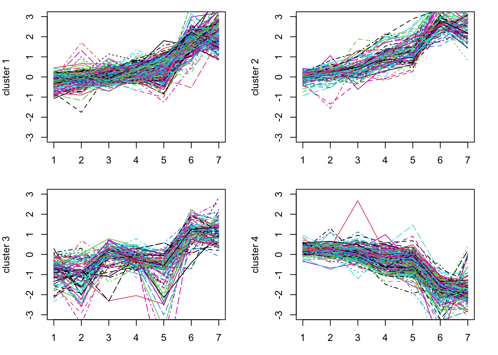

[1] "ExpressionSet"
attr(,"package")
[1] "Biobase"18 K-means clustering
18.1 History of the k-means algorithm
The k-means clustering algorithm was first proposed by Stuart Lloyd in 1957 as a technique for pulse-code modulation. However, it was not published until 1982. In 1965, Edward W. Forgy published an essentially identical method, which became widely known as the k-means algorithm. Since then, k-means clustering has become one of the most popular unsupervised learning techniques in data analysis and machine learning.
K-means clustering is a method for finding patterns or groups in a dataset. It is an unsupervised learning technique, meaning that it doesn’t rely on previously labeled data for training. Instead, it identifies structures or patterns directly from the data based on the similarity between data points (see Figure 18.1).
In simple terms, k-means clustering aims to divide a dataset into k distinct groups or clusters, where each data point belongs to the cluster with the nearest mean (average). The goal is to minimize the variability within each cluster while maximizing the differences between clusters. This helps to reveal hidden patterns or relationships in the data that might not be apparent otherwise.
18.2 The k-means algorithm
The k-means algorithm follows these general steps:
- Choose the number of clusters k.
- Initialize the cluster centroids randomly by selecting k data points from the dataset.
- Assign each data point to the nearest centroid.
- Update the centroids by computing the mean of all the data points assigned to each centroid.
- Repeat steps 3 and 4 until the centroids no longer change or a certain stopping criterion is met (e.g., a maximum number of iterations).
The algorithm converges when the centroids stabilize or no longer change significantly. The final clusters represent the underlying patterns or structures in the data. Advantages and disadvantages of k-means clustering
18.3 Pros and cons of k-means clustering
Compared to other clustering algorithms, k-means has several advantages:
- Simplicity and ease of implementation
- The k-means algorithm is relatively straightforward and can be easily implemented, even for large datasets.
- Scalability
- The algorithm can be adapted for large datasets using various optimization techniques or parallel processing.
- Speed
- K-means is generally faster than other clustering algorithms, especially when the number of clusters k is small.
- Interpretability
- The results of k-means clustering are easy to understand, as the algorithm assigns each data point to a specific cluster based on its similarity to the cluster’s centroid.
However, k-means clustering has several disadvantages as well:
- Choice of k
- Selecting the appropriate number of clusters can be challenging and often requires domain knowledge or experimentation. A poor choice of k may yield poor results.
- Sensitivity to initial conditions
- The algorithm’s results can vary depending on the initial placement of centroids. To overcome this issue, the algorithm can be run multiple times with different initializations and the best solution can be chosen based on a criterion (e.g., minimizing within-cluster variation).
- Assumes spherical clusters
- K-means assumes that clusters are spherical and evenly sized, which may not always be the case in real-world datasets. This can lead to poor performance if the underlying clusters have different shapes or densities.
- Sensitivity to outliers
- The algorithm is sensitive to outliers, which can heavily influence the position of centroids and the final clustering result. Preprocessing the data to remove or mitigate the impact of outliers can help improve the performance of k-means clustering.
Despite limitations, k-means clustering remains a popular and widely used method for exploring and analyzing data, particularly in biological data analysis, where identifying patterns and relationships can provide valuable insights into complex systems and processes.
18.4 An example of k-means clustering
18.4.1 The data and experimental background
The data we are going to use are from DeRisi, Iyer, and Brown (1997). From their abstract:
DNA microarrays containing virtually every gene of Saccharomyces cerevisiae were used to carry out a comprehensive investigation of the temporal program of gene expression accompanying the metabolic shift from fermentation to respiration. The expression profiles observed for genes with known metabolic functions pointed to features of the metabolic reprogramming that occur during the diauxic shift, and the expression patterns of many previously uncharacterized genes provided clues to their possible functions.
These data are available from NCBI GEO as GSE28.
In the case of the baker’s or brewer’s yeast Saccharomyces cerevisiae growing on glucose with plenty of aeration, the diauxic growth pattern is commonly observed in batch culture. During the first growth phase, when there is plenty of glucose and oxygen available, the yeast cells prefer glucose fermentation to aerobic respiration even though aerobic respiration is the more efficient pathway to grow on glucose. This experiment profiles gene expression for 6400 genes over a time course during which the cells are undergoing a diauxic shift.
The data in deRisi et al. have no replicates and are time course data. Sometimes, seeing how groups of genes behave can give biological insight into the experimental system or the function of individual genes. We can use clustering to group genes that have a similar expression pattern over time and then potentially look at the genes that do so.
Our goal, then, is to use kmeans clustering to divide highly variable (informative) genes into groups and then to visualize those groups.
18.5 Getting data
These data were deposited at NCBI GEO back in 2002. GEOquery can pull them out easily.
GEOquery is a little dated and was written before the SummarizedExperiment existed. However, Bioconductor makes a conversion from the old ExpressionSet that GEOquery uses to the SummarizedExperiment that we see so commonly used now.
library(SummarizedExperiment)
gse = as(gse, "SummarizedExperiment")
gseclass: SummarizedExperiment
dim: 6400 7
metadata(3): experimentData annotation protocolData
assays(1): exprs
rownames(6400): 1 2 ... 6399 6400
rowData names(20): ID ORF ... FAILED IS_CONTAMINATED
colnames(7): GSM887 GSM888 ... GSM892 GSM893
colData names(33): title geo_accession ... supplementary_file
data_row_countTaking a quick look at the colData(), it might be that we want to reorder the columns a bit.
colData(gse)$title[1] "diauxic shift timecourse: 15.5 hr" "diauxic shift timecourse: 0 hr"
[3] "diauxic shift timecourse: 18.5 hr" "diauxic shift timecourse: 9.5 hr"
[5] "diauxic shift timecourse: 11.5 hr" "diauxic shift timecourse: 13.5 hr"
[7] "diauxic shift timecourse: 20.5 hr"So, we can reorder by hand to get the time course correct:
gse = gse[, c(2,4,5,6,1,3,7)]18.6 Preprocessing
In gene expression data analysis, the primary objective is often to identify genes that exhibit significant differences in expression levels across various conditions, such as diseased vs. healthy samples or different time points in a time-course experiment. However, gene expression datasets are typically large, noisy, and contain numerous genes that do not exhibit substantial changes in expression levels. Analyzing all genes in the dataset can be computationally intensive and may introduce noise or false positives in the results.
One common approach to reduce the complexity of the dataset and focus on the most informative genes is to subset the genes based on their standard deviation in expression levels across the samples. The standard deviation is a measure of dispersion or variability in the data, and genes with high standard deviations have more variation in their expression levels across the samples.
By selecting genes with high standard deviations, we focus on genes that show relatively large changes in expression levels across different conditions. These genes are more likely to be biologically relevant and involved in the underlying processes or pathways of interest. In contrast, genes with low standard deviations exhibit little or no change in expression levels and are less likely to be informative for the analysis. It turns out that applying filtering based on criteria such as standard deviation can also increase power and reduce false positives in the analysis (Bourgon, Gentleman, and Huber 2010).
To subset the genes for analysis based on their standard deviation, the following steps can be followed: Calculate the standard deviation of each gene’s expression levels across all samples. Set a threshold for the standard deviation, which can be determined based on domain knowledge, data distribution, or a specific percentile of the standard deviation values (e.g., selecting the top 10% or 25% of genes with the highest standard deviations). Retain only the genes with a standard deviation above the chosen threshold for further analysis.
By subsetting the genes based on their standard deviation, we can reduce the complexity of the dataset, speed up the subsequent analysis, and increase the likelihood of detecting biologically meaningful patterns and relationships in the gene expression data. The threshold for the standard deviation cutoff is rather arbitrary, so it may be beneficial to try a few to check for sensitivity of findings.
Examining the plot, we can see that the most highly variable genes have an sd > 0.8 or so (arbitrary). We can, for convenience, create a new SummarizedExperiment that contains only our most highly variable genes.
idx = sds>0.8 & !is.na(sds)
gse_sub = gse[idx,]18.7 Clustering
Now, gse_sub contains a subset of our data.
The kmeans function takes a matrix and the number of clusters as arguments.
The km kmeans result contains a vector, km$cluster, which gives the cluster associated with each gene. We can plot the genes for each cluster to see how these different genes behave.
expression_values = assays(gse_sub)[[1]]
par(mfrow=c(2,2), mar=c(3,4,1,2)) # this allows multiple plots per page
for(i in 1:k) {
matplot(t(expression_values[km$cluster==i, ]), type='l', ylim=c(-3,3),
ylab = paste("cluster", i))
}

Try this with different size k. Perhaps go back to choose more genes (using a smaller cutoff for sd).
18.8 Summary
In this lesson, we have learned how to use k-means clustering to identify groups of genes that behave similarly over time. We have also learned how to subset our data to focus on the most informative genes.